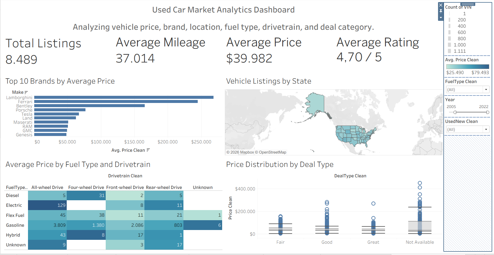
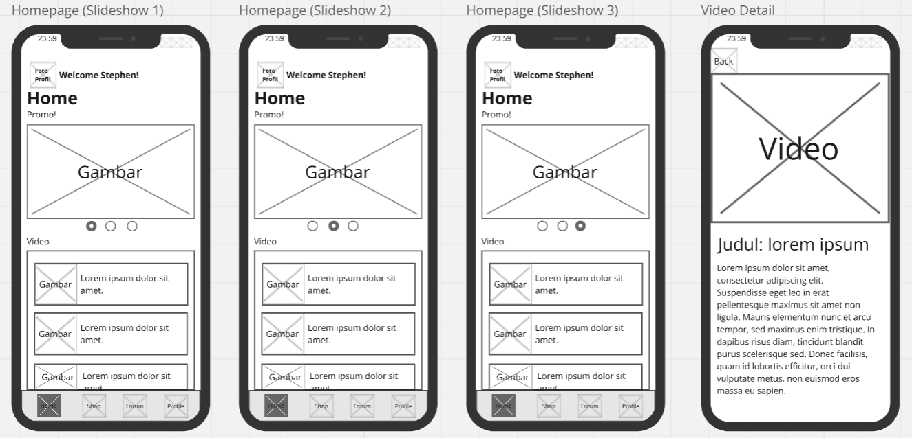
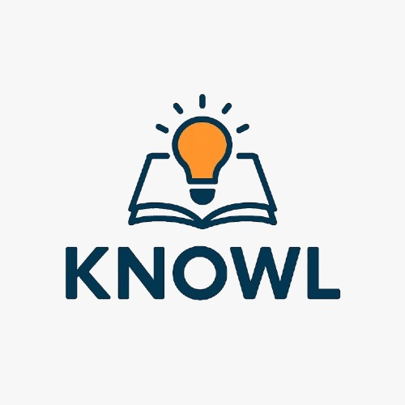
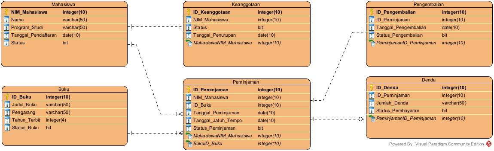
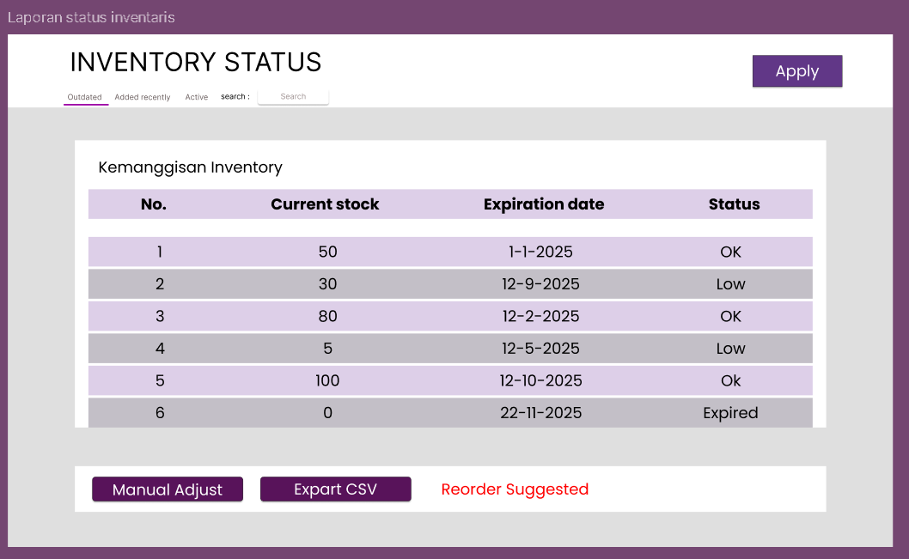
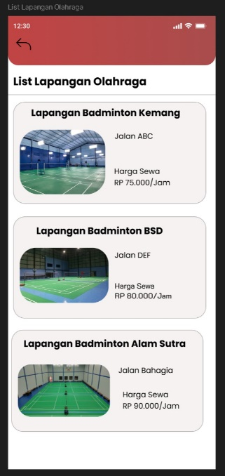
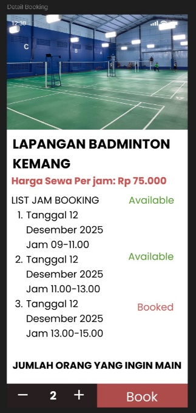

A portfolio by
Kennes
Jansen.
Information Systems student.
Exploring how design, data, and thoughtful systems can make everyday experiences work better.
Explore my workBINUS UniversityJakarta, Indonesia
UI/UX & prototypingData visualizationSystems thinkingEvent coordination
01 / PROJECTS
From questions
to projects.
Work across design, data, research, and community — from early concepts to prototypes and dashboards.
UI/UX PROTOTYPE
ACCESS
Helping people with mobility challenges plan their journeys with accessibility and support in mind.
Read project briefClose project brief
UI/UX PROTOTYPE
ACCESS
Helping people with mobility challenges plan their journeys with accessibility and support in mind.
Read project briefClose project briefThe question
How can someone plan a comfortable trip when accessibility information is scattered and assistance may be uncertain?
Project direction
Explore destination accessibility information and support needs at critical points, such as entering buildings, navigating unfamiliar places, and boarding transport.
Scope & deliverable
A student UI/UX project with prototype screens for people with mobility challenges and their companions. The design explores personal mobility preferences, trip planning, and support throughout a journey.
EXCEL DASHBOARD
BudgetWise
Bringing income, expenses, and transfers together to make personal financial activity easier to explore.
Read project briefClose project brief
EXCEL DASHBOARD
BudgetWise
Bringing income, expenses, and transfers together to make personal financial activity easier to explore.
Read project briefClose project briefThe question
How can a list of transactions become a clear picture of income, spending, and financial habits?
Dashboard approach
Combine income, expense, and transfer indicators with monthly trends, category breakdowns, and payment-method views.
Interaction
Use year, payment, and category slicers to explore different views of the data, supported by Excel pivot tables and GETPIVOTDATA.
DATA VISUALIZATION
Used Car Analysis
Exploring vehicle asking prices with Excel data preparation, exploratory analysis, and a Tableau dashboard.
View project & dashboardClose project brief
DATA VISUALIZATION
Used Car Analysis
Exploring vehicle asking prices with Excel data preparation, exploratory analysis, and a Tableau dashboard.
View project & dashboardClose project briefMy work
Prepared the data in Excel, explored mileage, price, and model-year patterns, and built a Tableau dashboard with KPI cards, four chart types, filters, and a brand-selection action.
Data scope
The supplied Excel file contains 8,506 listings and 38 columns. The report's dashboard screenshot shows 8,489 listings after a model-year filter of 2005–2022.
Explore the results
See the original dashboard and charts, the cleaning process, key findings, and links to Tableau and the presentation.

View full projectBEYOND THE HIGHLIGHTS
More projects & explorations.
Open a project to see its focus, scope, and stage.
AqquasFish-care videos, aquarium supplies, and community discussion in one mobile experience.
Design focus
A mobile app concept for aquarium hobbyists looking for care guidance, equipment, and a place to exchange questions and experience.
My contribution
Worked with Avicenna Ravishidqi Farhani across all stages, jointly developing personas, user journeys, task flows, navigation, wireframes, UI designs, Figma prototype interactions, and the project report.
Design outputs
Two personas, a user journey, nine task flows, a navigation map, and wireframes for learning, shopping, community, and account features.

EXPLORE THE DESIGN
See how the experience takes shape.
Browse five groups of wireframes, the user journey, and the navigation map.
View project galleryView design in Figma ↗
VinCraft CommunityA Minecraft community website for sharing creations and managing content.
Project scope
A coursework application connecting content discovery, publishing, and community interaction, with separate workflows for visitors, registered crafters, and administrators.
Application features
Title and category search, post creation and editing, thumbnails, video links, likes, comments, reports, and administration pages.
Technology
PHP and MySQL with MySQLi, supported by HTML, CSS, and JavaScript. A relational database connects users, posts, and community activity across seven tables.
PROGRAMMING FOR BUSINESSVinCraft
Community.PHP · MySQL · HTML · CSS · JavaScript
Community.PHP · MySQL · HTML · CSS · JavaScript
EXPLORE THE APPLICATION
From browsing to publishing.
Explore Home, Browse Posts, and Upload as static previews adapted from the project's templates and sample content.
View project & previewsKnowl OnlineElementary learning through lesson resources, quizzes, feedback, and learning history.
Learning focus
A group coursework application for elementary school students, organized by grade and subject and framed around SDG 4: Quality Education.
Application features
Account registration, lesson resources, multiple-choice quizzes, automatic scores, explanations for incorrect answers, quiz history, and administrator forms.
Technology
PHP with MySQLi and a MariaDB database. Four tables connect users, courses, questions, and quiz attempts; HTML and CSS provide the interface.

LEARN · PRACTICE · REVIEWEXPLORE THE LEARNING FLOW
From choosing a class to taking a quiz.
Browse static previews of grade selection, subjects, a lesson, a quiz, and the administrator's question form.
View project & previewsLibrary DatabaseA library data model with documented SQL exercises for membership, books, loans, returns, and fines.
Project scope
Business process mapping, a six-entity ERD, a data dictionary, and exercises covering DDL/DML, filtering, joins, aggregates, subqueries, and views.
My contribution
Listed as the person responsible for registration in the team's process worksheet. My individual sessions 13–14 submission documents SQL selection, calculated columns, filtering, sorting, and joins.
Database environments
SQL exercises documented in Oracle APEX and CockroachDB, with separate Apache Cassandra setup and CQL practice. The ERD was created with Visual Paradigm.
LIBRARY DATABASE

DATA MODELING · SQLEXPLORE THE DATABASE WORK
See the model and documented results.
Inspect the original ERD and four SQL examples, with individual and group work identified.
View model & queriesSolaria DatabaseRestaurant operations modeled through connected data, Oracle SQL, and an inventory interface concept.
Project scope
An academic team case study covering outlets, menu items, recipes, purchasing, inventory, transactions, customers, and staff.
Database design
Conceptual and logical diagrams, a dependency exercise, and 32 Oracle table definitions with constraints, sequences, triggers, and index examples.
Project outputs
A group report and presentation document the model, SQL, trigger creation screenshots, and proposed interfaces for restaurant operations.
SOLARIA DATABASE · DIM

DATA MODELING · ORACLE SQLEXPLORE THE DATABASE DESIGN
From a business scenario to database rules.
Inspect the original diagrams, an inventory mockup, and three SQL excerpts from the group report.
View case studyStSportSports court booking and equipment purchasing, from system analysis to interface design.
Project scope
A group coursework system design for customers booking sports courts and buying equipment, staff confirming reservations, and administrators preparing reports.
Analysis and modeling
Fishbone analysis, data flow diagrams, seven use case descriptions, a class model, sequence diagrams, state transitions, and activity diagrams.
Design outputs
Figma interface designs and a project report connecting customer, staff, and administrator workflows with a proposed three-tier architecture.
STSPORT · SYSTEMS ANALYSIS & DESIGN


COURT BOOKING · SPORTS EQUIPMENTEXPLORE THE SYSTEM DESIGN
See the screens and the models behind them.
Browse customer and staff screens, an admin reporting concept, and original analysis and system diagrams.
View designs & diagramsSnapCashPOS and business management planning for Indonesian small businesses.
The problem
Small food and beverage businesses need a practical way to connect transactions, inventory, and financial reporting.
My role
Scrum Master in a student team. The project presentation sets out a product backlog, sprint goals, responsibilities, and a planned March–May 2026 timeline.
Project scope
POS transactions, stock management, financial reports, analytics, and user roles, organized into a six-sprint plan.
CHILLINA beverage business concept built around a different serving experience.
The idea
Explore an ice-cup serving format, product positioning, and the experience customers seek when choosing a drink.
My involvement
Team member on the CHILLIN project and report, titled “A New Way to Experience Drinks.”
Deliverables
A business concept report covering user personas, an empathy map, a product prototype, a perceptual map, and revenue streams.
AI Learning Analytics AcceptanceResearch into how students perceive and adopt AI-supported learning systems.
Research question
How do compatibility, creative autonomy, knowledge of AI, and confidence in technology relate to students’ adoption of AI learning analytics?
My contribution
Research framework preparation, questionnaire processing, and results analysis as a co-author.
Deliverable & method
The manuscript “Student Acceptance of AI-Driven Learning Analytics System,” using a questionnaire and PLS-SEM analysis.
Oracle Cloud DatabaseCoursework connecting database monitoring, spatial analysis, and machine learning.
Scope
Explore database activity monitoring and practical uses of Oracle Spatial, Oracle Machine Learning, and Oracle Graph.
Case work
Campus location analysis and an Iris species classification exercise structured with the CRISP-DM framework.
Deliverable
Individual lab and final-exam documentation containing explanations and implementation screenshots.
Hadoop & PySparkHands-on exploration of a big-data processing environment.
Learning focus
Work through environment setup, command-line execution, and practical use of Hadoop and PySpark.
Current scope
Implementation practice and troubleshooting as part of ongoing big-data coursework.
Tools
Hadoop, PySpark, and a local command-line environment.
Digital & Financial LiteracyAn educational poster project about financial habits and online-gambling prevention.
The focus
Help young people understand online-gambling risks through digital literacy and more intentional financial habits.
My involvement
Team member in an LIDM digital educational-poster project.
Deliverables
A poster and supporting proposal developed around “Cerdas Digital, Bijak Finansial” and the “Jangan Tersesat di Dunia Finansial” campaign direction.
INSIGHT 2026 — WarmillaDigital-transformation support shaped around a small food business.
The context
Warmilla’s digital needs were assessed through the ISACA Student Group BINUS INSIGHT program.
My involvement
Volunteer team member helping identify business problems and explore suitable digital solutions.
Project work
Assessments and weekly reports covering digital presence, branding, promotional content, and customer communication.
Beelingua Learning PostersEnglish grammar explanations made easier to scan and review.
The focus
Present grammar through concise explanations, sentence patterns, examples, and comparisons of common mistakes.
My contribution
Created and revised the learning posters for use in mentoring.
Deliverable
A seven-page poster series covering topics such as the past tense, irregular verbs, past-tense questions, and was/were.
Purchase-Decision CompanionA financial-competition concept for more intentional purchase decisions.
The question
How might a pause, a reflective question, or a reminder of a personal goal help someone reconsider an unplanned purchase?
Ideas being explored
FOMO Profile, Trend Intelligence, Purchase Confirmation, Dream Buy, Reflection Streak, and Post-Purchase Reflection.
Stage
Early product and MVP exploration for a financial competition, supported by desk research. Behavioral effects remain hypotheses to test.
Partner PlannerExploring the transition from university to a first job.
The problem
Graduates face overlapping questions about career direction, skill readiness, applications, and the practical demands of starting work.
Concept direction
A life-transition assistant that brings preparation and next steps into a clearer sequence, with a transition timeline as a central idea.
Scope
Product-concept exploration centered on the wider university-to-work transition.
Student Adaptation AppExploring everyday decisions for students living away from home.
The problem
Information about meals, laundry, transport, printing, and places to study is scattered and may not match a student’s budget, location, or schedule.
Concept direction
Explore a personal adaptation setup, local decision support, and a routine-building flow around campus life.
Stage
An early study of a student-adaptation problem and possible application directions.
Geprek Ongkel — AI System ExplorationFinding a useful, feasible role for AI in a simple food-business operation.
Starting observation
The business closes when stock runs out. This provides a starting point for understanding its operating model and daily decisions.
Exploration
Identify which business problem would benefit from a system and where AI could add practical value.
Stage
Early problem and solution exploration; the application and AI approach are still being defined.
Welcoming Party — Hybrid ProductionPlanning the technical connection between an on-site event and its livestream.
The task
Plan a hybrid event setup with audio for the venue, a livestream, and recording.
Planning scope
Microphone, music, and video routing across vMix, an audio mixer, an audio interface or capture device, speakers, and stage monitors.
Focus
Understand how each signal reaches its intended destination and how the event’s technical setup fits together.
JusCoffeeA mobile-app concept connecting coffee-cart customers with sellers.
The problem
Customers cannot easily locate coffee carts, confirm stock, or avoid busy queues.
Design scope
Outlet mapping, stock information, pickup orders, digital payments, and seller reports, with customer, field-staff, and admin roles.
My contribution
Collaborated on needs analysis, system design, and app design. Presented the concept through a project poster.
Read the project post02 / EXPERIENCE
Learning
by doing.
From daily operations to campus events, I enjoy turning plans into something people can rely on.
Equipment Division Coordinator
LDKCP: LUNAR & BALON: NOVA
Coordinated equipment, transportation, and technical needs, while serving as the main operator for both events.
Online Shop Administrator
Gained hands-on experience in online shop operations through approximately one year of administrative work.
Volunteer
Helped small businesses identify problems and explore system-based solutions suited to their operations.
Volunteer
Taught elementary school students swimming fundamentals and helped supervise them during pool practice.
03 / A LITTLE ABOUT ME
Start with why.
Stay curious.
Information SystemsBINUS University · Kemanggisan
Hi, I'm Kennes — an Information Systems student specializing in Business Intelligence, with a habit of understanding the problem before jumping to a solution.
I explore the intersection of people, business, and technology through UI/UX projects, data visualization, and student organizations. I enjoy asking questions, working with a team, and making ideas more concrete.
As a member of the Information Systems Case Study Club, I take part in competitions and practice critical thinking. During my time at Bina Nusantara Computer Club in 2024–2025, I worked on application prototypes and joined weekly classes.
Find me on LinkedInTools I work with
HAVE A PROJECT OR AN IDEA?